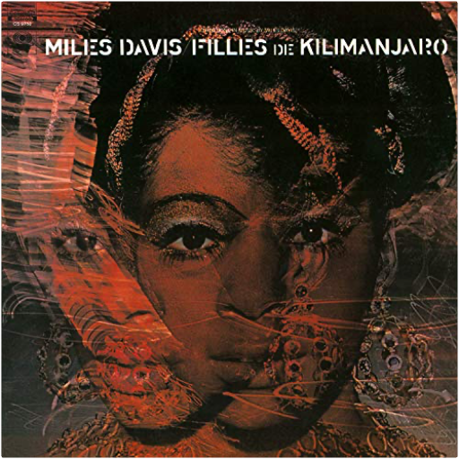

black beautymiles davis black beautymiles davis  2LP set, on 180-gram audiophile vinyl. Reissued in 2016! Live at the Fillmore West in San Francisco in April 1970. Originally only released in Japan. filles de kilimanjaromiles davis Limited 180gm audiophile vinyl LP pressing. Filles de Kilimanjaro (named after the Kilimanjaro African Coffee) is one the many masterpieces American composer and trumpeter Miles Davis recorded during his lifetime. It can be seen as a transitional album, right between his 'acoustic' and 'electric' period. He recorded this incredible work of modern jazz together with music greats such as Wayne Shorter, Herbie Hancock, and Chick Corea. The five different songs all fitting together as expressions of the same basis piece. The recording sessions made the musicians think and play in a different way. These kind of improvisations were given the listener a look into the future of jazz. It happens to be the swan song for his second great quintet, but one in which they're showing all their talents for the last time. Adventurous from start to end and filled with funky and bluesy rhythms.  feed the wolfmiss velvet feed the wolfmiss velvet Feed The Wolf is the 2nd album by Miss Velvet and The Blue Wolf. Their debut recording, Bad Get Some, received international critical acclaim. Miss Velvet & The Blue Wolf is a dynamic 8-piece New York-based band that brings a vital and original dimension to the contemporary Indie Rock/Funk scene. Fronted by the genre defying powerhouse lead vocalist Miss Velvet and featuring a rhythm and brass section comprised of some of Americas leading studio musicians, the band has been garnering rave reviews for their highly accomplished musicianship and on-stage flair. The band has performed over 100 concerts opening for George Clinton Parliament Funkadelic. The iconic worldwide tour has seen them play before audiences across the States, Europe, Asia, and Australia. Miss Velvet and the Blue Wolf have headlined at the SXSW Festival in Austin, Texas, Tallinn Music Week, Jogevatreff Festival, Augustibluus Festival and concerts in Riga, Helsinki and Tallinn. The Band is also a favorite and regular throughout the New York concert circuit.  monsters, inc.monsters, inc. monsters, inc.monsters, inc. L'histoire de Monstres & Cie raconte les péripéties de James Sullivan, dit Sulli, grand monstre bleu qui, un soir, découvre une petite fille entrée accidentellement dans une étrange usine de traitement de cris d'enfants, principale source d'énergie d'une armée de monstres de tout poil. Sulli va tout tenter pour la renvoyer dans un univers plus humain. La bande originale du film, composée par Randy Newman est le quatrième projet de l'artiste avec Disney et Pixar. On lui doit, parallèlement à sa carrière d'auteur compositeur interprète, les signatures des musiques des films Toy Story I et II, et A Bug's Life. Randy Newman a su transposer sur cette B.O. son sens de l'humour, sa sensibilité, mariant parfaitement sa musique aux scènes délirantes de cette superproduction. Pour les inconditionnels de l'artiste et pour les fans du film.  the montgomery movementthe montgomery express the montgomery movementthe montgomery express Funk's answer to the Five Blind Boys of Alabama, Florida's Montgomery Express stood at the crossroadsof politically conscious soul and mystically awakeneddance music. Comprised of two blind musicians intheir 20s and a teenage rhythm section, their lone LPwas cut in 1972 for Orlando's Dove label, then reissuedon Folkways two years later. Although the label usuallysteered clear of soul music and anything remotelycommercial sounding, Montgomery Express tapped intoFolkways? Guthrie-cum-Chamber Bros. Nerve.?My whole life, I heard music in the air, beautiful music.I?ve been involved in supernatural things, spoken withspirits. I have heard an orchestra up in the air. I knowI?ve heard it.? ?Paul Montgomery. |


 Made with Delicious Library
Made with Delicious LibraryNancy, State zipflap congrotus delicious library Thomas, Julien